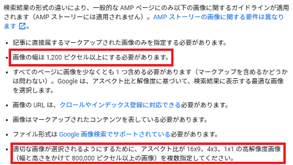
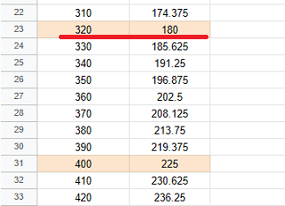
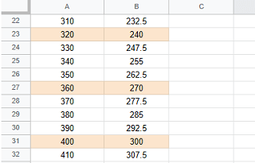

Article構造化データの画像サイズを比較
Article（記事）構造化データの画像についてですが、記事 | 検索セントラルには以下のような記載があります。

こちらのガイドラインは、一般的なAMPページにのみ適用されるとの記載がありますが、AMPページで記事の構造化データを作成する場合は以下の画像サイズを使用することをおすすめします。
- 画像の幅は 1,200 ピクセル以上
- アスペクト比が 16x9、4x3、1x1
- 幅と高さをかけて 800,000 ピクセル以上
この条件で具体的に何pxの画像がよいのかについては、以下のようなアスペクト比16x9の「1200px × 675px」や4x3の「1200px × 900px」あたりのサイズが候補にあげられるかと思います。また、記事内で使用する際も、このアスペクト比を保ったままで縮小して表示すれば、高解像度で画質がよくなるかもしれません。
例えば、記事・構造化データ用では「1280px × 720px」の画像を使用し、記事中のimgタグではアスペクト比を保ったまま「width="640" height="360"」で指定すると「x2」の高画質で表示されます。
ただし、画像が大きい場合はダウンロードサイズも大きくなるため、モバイル環境ではサイトの表示に時間がかかってしまう可能性もあります。その場合、サイト内ではAMP用の画像自体を縮小して使用するか、もしくは画像の容量を圧縮した上で使用されるとよいでしょう。
アスペクト比「16x9」の画像サイズの候補
以下は単純にアスペクト比「16：9」で端数のでない数字を拾ったものです。

また、heightが奇数の場合も2分の1に縮小する際には割り切れないため、以下の数字が候補になるかと思います。
width：320px、height：180px
width：480px、height：270px
width：640px、height：360px
width：800px、height：450px
width：960px、height：540px
width：1120px、height：630px（※幅×高さ＝705,600）
width：1200px、height：675px（※幅×高さ＝810,000）
width：1280px、height：720px（※幅×高さ＝921,600）
当サイトのコンテンツ幅は660pxなので「width：640px、height：360px」あたりのサイズは少し大きめと感じています。
また、一般的なスマホのデバイス幅は320pxや375px、あるいは414px程度となっているため、それ以上のサイズで縮小して使用することを考えると、最終的には「width：480px、height：270px」あたりが無難な選択になるかもしれません。
記事の構造化データで使用する画像については、「幅と高さをかけて 800,000 ピクセル以上」が推奨されているため、「width：1200px、height：675px」あたりのサイズが無難ではないかと感じています。
アスペクト比「4x3」の画像サイズの候補
同様に、以下はアスペクト比「4：3」で端数のでない数字を拾ったものです。

width：320px、height：240px
width：360px、height：270px
width：400px、height：300px
width：440px、height：330px
width：480px、height：360px
width：520px、height：390px
width：560px、height：420px
width：600px、height：450px
width：640px、height：480px
width：680px、height：510px
width：720px、height：540px
width：760px、height：570px
width：800px、height：600px
width：840px、height：630px
width：880px、height：660px
width：920px、height：690px
width：960px、height：720px
width：1000px、height：750px（※幅×高さ＝750,000）
width：1040px、height：780px（※幅×高さ＝811,200）
width：1080px、height：810px（※幅×高さ＝874,800）
width：1120px、height：840px（※幅×高さ＝940,800）
width：1160px、height：870px（※幅×高さ＝1,009,200）
width：1200px、height：900px（※幅×高さ＝1,080,000）
width：1240px、height：930px（※幅×高さ＝1,153,200）
width：1280px、height：960px（※幅×高さ＝1,228,800）
当サイトでは「width：480px、height：270px」と「width：480px、height：360px」あたりを好んで使っています。そのほか、「記事」構造化データの画像については「width：1200px、height：900px」あたりを指定しています。
ペイント等で画像を開き、サイズ変更で水平方向を「1200」に指定したのち、ペイント3Dで上記のサイズを指定して切り抜けば、正確に切り抜けるはずです。ただし、拡大するとぼやけてしまうため、あらかじめ高解像度の画像を用意して縮小することをおすすめします。
また、スクエアの「1:1」については縦長になってしまうため、当サイトではほとんど使うことはありません。できるだけスクロールしなくても済むよう、縦長よりも横長の画像サイズを選択されるとよいでしょう。